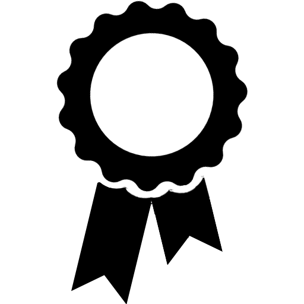

Publications
Check my Google Scholar page for the latest publications
- Samira Pulatova, Lawrence H Kim. "Co-Designing Programmable Fidgeting Experience with Swarm Robots for Adults with ADHD" The 26th International ACM SIGACCESS Conference on Computers and Accessibility. 2024.
- Chuxuan Zhang, Bermet Burkanova, Lawrence H Kim, Lauren Yip, Ugo Cupcic, Stéphane Lallée, Angelica Lim. "React to This! How Humans Challenge Interactive Agents using Nonverbal Behaviors" The IEEE/RSJ International Conference on Intelligent Robots and Systems. 2024.
- Jiadi Luo, Veronika Domova, Lawrence H Kim. "Impact of Multi-Robot Presence and Anthropomorphism on Human Cognition and Emotion" Proceedings of the CHI Conference on Human Factors in Computing Systems. 2024.
- Lawrence H Kim, Veronika Domova, Yuqi Yao, Parsa Rajabi. "SwarmFidget: Exploring Programmable Actuated Fidgeting with Swarm Robots" Proceedings of the 36th Annual ACM Symposium on User Interface Software and Technology. 2023.
- Lawrence H Kim, Gourab Saha, Annel Amelia Leon, Abby C King, Matthew Louis Mauriello, Pablo E Paredes. "Shared Autonomy to Reduce Sedentary Behavior Among Sit-Stand Desk Users in the United States and India: Web-Based Study" JMIR Formative Research. 2022.
- Lawrence H Kim, Veronika Domova, Yuqi Yao, Pablo E Paredes. "Effects of a Co-Located Robot and Anthropomorphism on Human Motivation and Emotion across Personality and Gender" IEEE International Symposium on Robot and Human Interactive Communication. 2022.
- Lawrence H. Kim, Veronika Domova, Yuqi Yao, Chien-Ming Huang, Sean Follmer, Pablo E. Paredes "Robotic Presence: The Effects of Anthropomorphism and Robot State on Task Performance and Emotion" IEEE Robotics and Automation Letters. 2022.
- Lawrence H. Kim and Sean Follmer. "Generating Legible and Glanceable Swarm Robot Motion through Trajectory, Collective Behavior, and Pre-attentive Processing Features" ACM Transaction on Human-Robot Interaction. 10, 3, Article 21 (July 2021), 25 pages.
- Lawrence H. Kim, Annel Amelia Leon, Ganapathy Sankararaman, Blake M. Jones, Gourab Saha, Amanda Spyropolous, Akshara Motani, Matthew Louis Mauriello and Pablo E. Paredes. "The Haunted Desk: Exploring Non-Volitional Behavior Change with Everyday Robotics" Companion of the 2021 ACM/IEEE International Conference on Human-Robot Interaction, pp. 71–75. 2021. Best LBR Nominee 
- Kai Zhang, Lawrence H. Kim, Yipeng Guo, and Sean Follmer. "Automatic Generation of Spatial Tactile Effects by Analyzing Cross-modality Features of a Video." In Symposium on Spatial User Interaction, pp. 1-10. 2020.
- Lawrence H. Kim, Abena Boadi-Agyemang, Alexa Fay Siu, and John Tang. "When to Add Human Narration to Photo-Sharing Social Media." In The 22nd International ACM SIGACCESS Conference on Computers and Accessibility, pp. 1-3. 2020.
- Lawrence H. Kim. "Designing In-Situ Interaction with Ubiquitous Robots." PhD Dissertation (Stanford University), 2020.
- Lawrence H. Kim, Daniel S. Drew, Veronika Domova, and Sean Follmer. "User-defined Swarm Robot Control." In Proceedings of the 2020 CHI Conference on Human Factors in Computing Systems, pp. 1-13. 2020. Best Paper Honorable Mention
- Lawrence H. Kim, Pablo Castillo, Sean Follmer, and Ali Israr. "VPS Tactile Display: Tactile Information Transfer of Vibration, Pressure, and Shear." Proceedings of the ACM on Interactive, Mobile, Wearable and Ubiquitous Technologies 3, no. 2 (2019): 1-17.
- Lawrence H. Kim and Sean Follmer. "Interaction with Ubiquitous Robots and Autonomous IoT." Proceedings of the CHI 2019 Workshop on New Directions for the IoT: Automate, Share, Build, and Care. 2019.
- Lawrence H. Kim and Sean Follmer. "SwarmHaptics: Haptic Display with Swarm Robots." In Proceedings of the 2019 CHI Conference on Human Factors in Computing Systems, pp. 1-13. 2019. Best Paper Honorable Mention
- Alexa F. Siu, Shenli Yuan, Hieu Pham, Eric Gonzalez, Lawrence H. Kim, Mathieu Le Goc, and Sean Follmer. "Investigating tangible collaboration for design towards augmented physical telepresence." In Design thinking research, pp. 131-145. Springer, Cham, 2018.
- Yiwei Zhao, Lawrence H. Kim, Ye Wang, Mathieu Le Goc, and Sean Follmer. "Robotic assembly of haptic proxy objects for tangible interaction and virtual reality." In Proceedings of the 2017 ACM International Conference on Interactive Surfaces and Spaces, pp. 82-91. 2017.
- Lawrence H. Kim and Sean Follmer. "Ubiswarm: Ubiquitous robotic interfaces and investigation of abstract motion as a display." Proceedings of the ACM on Interactive, Mobile, Wearable and Ubiquitous Technologies 1, no. 3 (2017): 1-20.
- Griffin Dietz, Jane L. E, Peter Washington, Lawrence H. Kim, and Sean Follmer. "Human perception of swarm robot motion." In Proceedings of the 2017 CHI conference extended abstracts on human factors in computing systems, pp. 2520-2527. 2017.
- Le Goc, Mathieu, Lawrence H. Kim, Ali Parsaei, Jean-Daniel Fekete, Pierre Dragicevic, and Sean Follmer. "Zooids: Building blocks for swarm user interfaces." In Proceedings of the 29th Annual Symposium on User Interface Software and Technology, pp. 97-109. 2016. Best Paper Award
- Sungjune Jang, Lawrence H. Kim, Kesler Tanner, Hiroshi Ishii, and Sean Follmer. "Haptic edge display for mobile tactile interaction." In Proceedings of the 2016 CHI Conference on Human Factors in Computing Systems, pp. 3706-3716. 2016.
- Kamran Shamaei, Lawrence H. Kim, and Allison M. Okamura. "Design and evaluation of a trilateral shared-control architecture for teleoperated training robots." In 2015 37th annual international conference of the IEEE engineering in medicine and biology society (EMBC), pp. 4887-4893. IEEE, 2015.
- Lawrence H. Kim, Clifford Bargar, Yuhang Che, and Allison M. Okamura. "Effects of master-slave tool misalignment in a teleoperated surgical robot." In 2015 IEEE International Conference on Robotics and Automation (ICRA), pp. 5364-5370. IEEE, 2015.